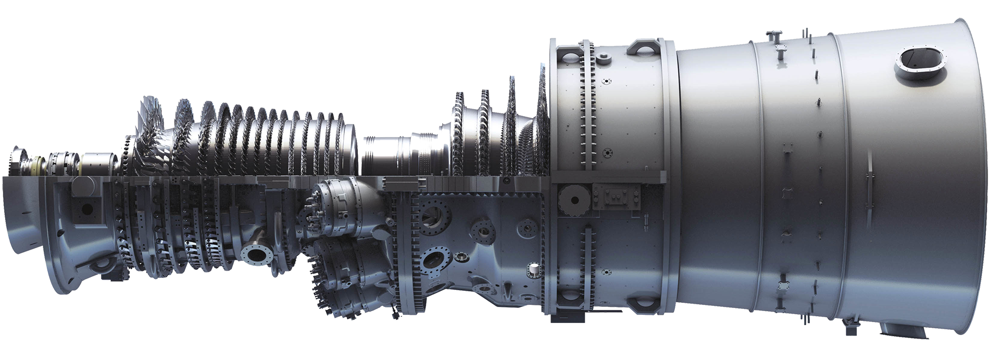
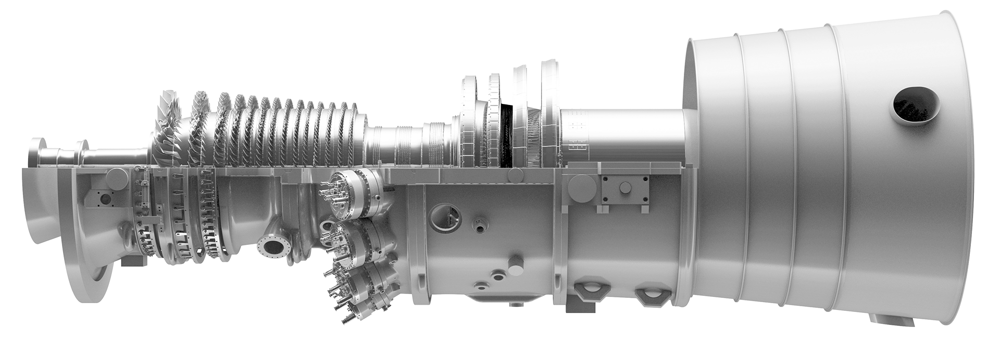

GE Vernova (GEV)
W kontekscie: Naziemny bottleneck energetyczny i sieciowy
Czym jest spółka. GE Vernova to wydzielona 2 kwietnia 2024 r. z General Electric "energetyczna połowa" dawnego konglomeratu - dostawca sprzętu i usług dla wytwarzania oraz przesyłu energii (spółka nie jest operatorem wytwarzającym prąd na własny rachunek). Spółka raportuje trzy segmenty: Power (turbiny gazowe heavy-duty 7HA/9HA, aeroderywatywne LM2500/LM6000, usługi serwisowe, jądro BWRX-300), Electrification (rozdzielnie, transformatory, switchgear, HVDC, mikrogridy, oprogramowanie gridowe) oraz Wind (turbiny wiatrowe). Park zainstalowanych turbin gazowych GE Vernova to ~7 000 sztuk (moc ~800 GW wymaga bezpośredniego cytatu z SEC/IR i jest podawana ostrożnie), a ~25% światowej energii elektrycznej jest wytwarzane z użyciem technologii GE Vernova - cała technologia (gaz, wiatr, jądro, hydro, grid), nie sam park turbin gazowych (🔵 GE Vernova Annual Report 2024/2025 / 10-K).
Dlaczego to jest sedno bottlenecku energetycznego dla AI. Centra danych pod AI potrzebują dużej, ciągłej mocy (baseload) szybciej, niż sieć potrafi ją dostarczyć - a to jest dokładnie domena GE Vernova na dwóch poziomach stosu wartości. Po pierwsze, wytwarzanie: turbina CCGT w układzie kombinowanym (7HA, 290-430 MW na jednostkę, sprawność do 64%+) jest dziś podstawowym, sprawdzonym źródłem dla wielkich kampusów, co rozwija wątek Energia: baseload, powrót do gazu/jądra, SMR dla DC. Po drugie, przyłączenie do sieci (grid interconnection): segment Electrification dostarcza rozdzielnie, transformatory i HVDC (high-voltage direct current; tu DC = direct current, prąd stały), czyli fizyczne elementy podłączenia DC (DC = data center, centrum danych), których brak jest jednym z głównych korków - patrz Brak transformatorów i switchgear: lead times oraz Kolejki przyłączeniowe i ograniczenia sieci.
Gdzie GE Vernova NIE gra. Spółka nie oferuje chłodzenia szaf serwerowych ani fizycznej infrastruktury wnętrza DC jako osobnej linii - to domena Vertiv, Schneider czy Eaton (🔵/🟠 GE Vernova 10-K / rynek). GE Vernova dostarcza warstwę wyżej: energię i podłączenie do sieci. W ogniwach paliwowych dla DC spółka też nie jest liderem - tu prym wiedzie Bloom Energy (🟠 Introl).
Dla inwestora: ekspozycja GE Vernova na temat DC to nie osobna nisza, lecz najszybciej rosnący popyt w jej core'owych segmentach Power i Electrification. Spółka sprzedaje dwa najtwardsze "korki" bottlenecku - moc baseload i podłączenie do sieci - co czyni popyt funkcją tempa budowy DC, a nie ceny pojedynczego megawata.
Materiały spółki
Grafiki z materiałów spółki / IR (prawa właściciela, użycie redakcyjne). Pełny rejestr:
Spolki/assets/_licencje.json.

1 | | | Turbina gazowa 7HA - flagowy produkt Heavy-Duty dla dużych kampusów DC; pokazuje konfigurację i dane techniczne (290-430 MW, do 50% H2-ready). Źródło: kimi-web-img.moonshot.cn; licencja: materiały spółki / IR - prawa właściciela, użycie redakcyjne.

2 | | | Turbina gazowa 9HA - najwydajniejsza H-class, serce najwydajniejszej elektrowni CCGT na świecie. Źródło: kimi-web-img.moonshot.cn; licencja: materiały spółki / IR - prawa właściciela, użycie redakcyjne.
Ekspozycja na temat w liczbach
Skala spółki. Przychód FY 2025 (rok do 31.12.2025, opublikowany 28.01.2026): 38,1 mld USD (+9% GAAP, +9% organicznie r/r); Q4 2025: 11,0 mld USD (+4% GAAP r/r). (GAAP = wynik wg standardów rachunkowości; "organicznie" = z wyłączeniem akwizycji, zbyć i efektu kursowego.) Zysk netto FY 2025: 4,9 mld USD - przy czym 2,9 mld USD to jednorazowa korzyść podatkowa z release valuation allowance (rozwiązanie odpisu na aktywa podatkowe - efekt księgowy, nie gotówkowy), więc bazowa rentowność jest istotnie niższa. Adjusted EBITDA margin (skorygowana marża operacyjna przed amortyzacją, z wyłączeniem pozycji jednorazowych) urosła z 5,8% (FY 2024) do 8,4% (FY 2025). Spółka jest w pozycji net cash: gotówka 8,8 mld USD na 31.12.2025 (vs 8,2 mld USD na 31.12.2024) przy niewielkim całkowitym długu bez leasingu (rzędu 0,1 mld USD - wartość wymaga weryfikacji w 10-K/10-Q) (🔵 8-K Q4 2025; 10-K 2024).
Najnowszy kwartał (Q1 2026, okres 1.01-31.03.2026, ogłoszony 22.04.2026). Przychód całkowity 9,339 mld USD (+16% GAAP, +7% organicznie r/r), w podziale segmentowym: Power 4,971 mld USD (+12% GAAP, +10% organicznie), Electrification 3,000 mld USD (+61% GAAP, +29% organicznie - efekt konsolidacji Prolec GE) oraz Wind 1,400 mld USD (-25% organicznie). Marże segment EBITDA wyraźnie poprawiły się r/r: Power 16,3% (+470 bps), Electrification 17,8% (+670 bps GAAP), przy stracie Wind 382 mln USD (marża -26,7%). Zamówienia całkowite 18,3 mld USD (+71% organicznie). Free Cash Flow w samym Q1 2026 wyniósł 4,791 mld USD (>4x r/r) - więcej niż w całym FY 2025 (3,7 mld USD); gotówka na koniec kwartału urosła do 10,2 mld USD (vs 8,8 mld USD na 31.12.2025) (🔵 8-K Q1 2026, 22.04.2026 / 🟠 transkrypt Q1 2026). Spółka podniosła guidance FY 2026 22.04.2026: przychód do 44,5-45,5 mld USD (z 44,0-45,0), Adjusted EBITDA margin do 12-14% (z 11-13%) i FCF do 6,5-7,5 mld USD (z 5,0-5,5); dla Power segment EBITDA margin do 17-19%, dla Electrification przychód 14,0-14,5 mld USD i marża 18-20%, strata Wind ok. 400 mln USD (🔵 8-K Q1 2026).
pie title Przychod wg segmentu FY 2025 (mld USD)
"Power" : 19.8
"Wind" : 9.1
"Electrification" : 9.6
Rys. - przychody segmentowe pokazane przed eliminacjami; suma 38,5 mld USD przewyższa raportowany total 38,1 mld o ok. 0,5 mld USD sprzedaży międzysegmentowej (487 mln USD). Power i Electrification (~77% przychodu) to segmenty niosące ekspozycję na DC; Wind kurczy się. Dane: 🔵 GE Vernova 8-K Q4 2025.
Ile z tego to centra danych? NIE UJAWNIONE oficjalnie. GE Vernova nie raportuje segmentu "Data Center" ani osobnej linii przychodowej. Dostępne proxy: CEO Scott Strazik wskazał, że Big Tech może stanowić ~25% bazy klientów w 2026 r. (vs 10% w 2025 i "negligible" w 2024) - to mix klientów, NIE % przychodów (🟠 Bloomberg / Energy Central, 21.01.2026). Według Quartr centra danych to 20-25% backlogu całej spółki (🟠 Quartr, Q1 2026). W Power ok. 20% z ~100 GW zakontraktowanych/zarezerwowanych slotów (czyli ~20 GW) to wolumen jawnie wspierający centra danych - udział w kontraktach/slotach, nie w przychodach (🟠 transkrypt Q1 2026). W Q1 2026 zamówienia equipment w Electrification specjalnie na DC wyniosły 2,4 mld USD - więcej niż wszystkie zamówienia DC w całym FY 2025 (🔵 8-K Q1 2026 / 🟠 transkrypt Q1 2026). Spółka wskazuje też rosnący entitlement: wcześniej 200-300 mln USD przychodu Electrification na 1 GW DC, obecnie "probably already higher" (🟠 transkrypt Q1 2026).
Dynamika - tu widać popyt związany m.in. z AI/DC. (Liczby poniżej są segmentowe, nie wyłącznie DC/AI.) Zamówienia segmentu Power urosły +52% organicznie, a Electrification +21% organicznie w FY 2025 (🔵 8-K Q4 2025). Marża EBITDA Power wzrosła o +220 bps (bps = punkt bazowy = 0,01 pkt proc.) do 14,7%, Electrification o +590 bps do 14,9%. Łączny backlog (RPO, Remaining Performance Obligations - wartość zakontraktowanych, jeszcze nie rozpoznanych przychodów) skoczył z ok. 119,0 do 150,0 mld USD na 31.12.2025, czyli o ok. +31 mld USD / +26%, a sam backlog turbin gazowych z rezerwacjami slotów urósł do 83 GW (z 62 GW na koniec Q3 2025). Najnowszy odczyt (Q1 2026): backlog RPO ok. 163 mld USD (+13 mld USD kw/kw, w tym ~5 mld USD z Prolec GE), backlog equipment 76 mld USD (+67% r/r), a backlog turbin gazowych ok. 100 GW (44 GW firm equipment backlog + 56 GW slot reservations), z celem co najmniej 110 GW na koniec 2026 (🔵 8-K Q1 2026 / 🟠 transkrypt Q1 2026).
xychart-beta
title "Backlog (RPO) GE Vernova - mld USD"
x-axis ["31.12.2024", "31.12.2025", "31.03.2026"]
y-axis "mld USD" 0 --> 180
bar [119, 150, 163]
Rys. - Backlog wzrósł o ok. 31 mld USD (+26%) w 2025 r. i dalej do ok. 163 mld USD na 31.03.2026 (+13 mld kw/kw, w tym ~5 mld z Prolec GE); marża w backlogu equipment poprawiła się o 6 pkt proc. Dane: 🔵 GE Vernova 8-K Q4 2025 i 8-K Q1 2026, 10-K 2024.
Dla inwestora: brak osobnego segmentu DC oznacza, że inwestor nie widzi twardego % przychodów z tematu - ma jedynie proxy (25% klientów, 20-25% backlogu). Mechanizm jest jednak czytelny: ekspansja DC napędza zamówienia i marże w Power oraz Electrification, a rosnący backlog przekłada się na widoczność przychodów na lata naprzód.
Kluczowe umowy/wdrozenia - co znacza
Ekspozycja GE Vernova na DC materializuje się w konkretnych projektach na trzech poziomach: wielkie elektrownie CCGT, szybkie jednostki aeroderywatywne i przyszłe jądro.
- Chevron + Engine No. 1 + GE Vernova (styczeń 2025): docelowo do 4 GW mocy, oparte na 7 turbinach 7HA zarezerwowanych w ramach slot reservation agreement (rezerwacja slotów produkcyjnych, nie pełne zamówienie); same 7 turbin 7HA odpowiada ok. 2-3 GW, a docelowe ~4 GW zakłada układ kombinowany i etapowanie. Koncepcja "power foundries" dedykowanych DC w USA, in-service do końca 2027 (🔵 komunikat Chevron / Business Wire). Pokazuje model dostawy energii bezpośrednio pod kampus, omijając kolejkę przyłączeniową.
- NRG Energy + GE Vernova + Kiewit (luty 2025): 5,4 GW nowych elektrowni CCGT w ERCOT (rynek energii Teksasu) i PJM (rynek wsch. USA); dwie 7HA zabezpieczone w ramach slot reservation agreement, pierwszy blok 1,2 GW w 2029 (🔵 NRG IR / Business Wire). To wieloletni pipeline - obrazuje time-to-power rzędu lat dla wielkiej generacji.
- Crusoe - 29 turbin LM2500XPRESS (lipiec 2025): łącznie ~1 GW dla AI data centers (10 szt. w grudniu 2024 + 19 szt. w czerwcu 2025) (🔵 GE Vernova / Crusoe). Jednostki aeroderywatywne (35 MW, start w 5 min) to odpowiedź na potrzebę szybkiego, behind-the-meter zasilania, gdy sieci nie ma.
- AWS Strategic Framework Agreement (marzec 2025): turnkey substation solutions, współpraca przy onshore wind i eksploracja generacji dla DC w Ameryce Płn., Europie i Azji (🔵 GE Vernova / AWS). Bezpośrednie powiązanie z hyperscalerem.
- Duke Energy - 11 turbin 7HA (kwiecień 2025): dodatkowe 11 szt. do istniejących 8, dla projektów w 6 stanach USA (🟠/🔵 Turbomachinery / komunikat Duke).
- BWRX-300 SMR - OPG Darlington (Ontario): docelowo 4 reaktory x ~300 MWe = ~1,2 GW; pierwsza komercyjna instalacja SMR (Unit 1) planowana na koniec 2029 r. (oficjalny cel OPG/GEH). Projekt ma licencję budowlaną CNSC (kwiecień 2025) i final provincial approval (maj 2025), jest w fazie budowy: wykopy Unit 1 na 87% ukończenia (stan marzec 2026), ułożenie basemat planowane latem 2026 - przy czym IAEA wciąż nie odnotowała "startu budowy" (brak wlanego betonu na marzec 2026), co pozostawia first-of-a-kind construction risk. Projekt TVA Clinch River (Tennessee) jest w fazie licencjonowania - licencja budowlana NRC spodziewana "as soon as 2026" / H2 2026 (🔵/🟠 GE Vernova / OPG / CEDAR Project / transkrypt Q1 2026).
- Inne inicjatywy SMR: wsparcie w ramach porozumienia USA-Japonia do 40 mld USD dla GE Vernova Hitachi na budowę SMR w USA (Tennessee, Alabama) (kwiecień 2026); Generic Design Agreement z OSGE w Polsce (luty 2026) oraz MOU GE Vernova-Hitachi na rozwój SMR w Azji Południowo-Wschodniej (kwiecień 2026) (🟠 transkrypt Q1 2026 / GreenStocks Research / TEPA).
Dla inwestora: umowy dzielą się na trzy horyzonty pewności i czasu - aeroderywatywne (Crusoe, ~1 GW, dostawy już trwają), CCGT (Chevron 4 GW do 2027, NRG 5,4 GW do 2029+) oraz jądro (BWRX-300 dopiero od 2029). Im dalej w przyszłość, tym większa skala, ale i dłuższy time-to-power oraz ryzyko regulacyjne.
Pozycja rynkowa i udzialy
GE Vernova jest jednym z 3-5 globalnych liderów turbin gazowych, ale konkretne udziały różnią się zależnie od definicji rynku (heavy-duty vs wszystkie turbiny, wg sztuk vs wg MW) i bywają wzajemnie sprzeczne. Najtwardsze są dane o zainstalowanej bazie, które spółka podaje w dokumentach SEC/IR.
Uwaga: poniższe udziały pochodzą z różnych baz (definicja rynku, miara, rok, region) i nie są wprost porównywalne. Najbliższa jednolitej tabeli (jedno źródło, jeden rok) jest Precedence Research 2025 dla całego rynku turbin gazowych: GE Vernova 28,1%, Siemens Energy 24,1%, MHI 18,4%, Baker Hughes 9,6%, Ansaldo 7,3%, Solar Turbines 6,0% (🟠 Precedence Research, 2025) - ale to model rynkowy obejmujący wszystkie typy turbin gazowych, nie heavy-duty. W wąskim segmencie heavy-duty >100 MW GE Vernova to jeden z 3 OEM-ów (GEV, Siemens, MHI) skupiających ~90% rynku (🟠 IEEFA, październik 2025).
- Heavy-duty gas turbines, globalnie, 2025: udział GE Vernova >14,5% wg sztuk/wartości (🟠 GM Insights, 2025). Inne źródła rozjeżdżają się: Fact.MR przypisuje Siemensowi ~17%, Precedence Research podaje ~28,1% dla GEV na rynku all gas turbines, a Mordor Intelligence szacuje, że GEV razem z Siemensem trzymają ~70% rynku industrial gas turbines - bazy i definicje są różne.
- Aeroderywatywne 30-60 MW (ostatnie ~5 lat): GE Vernova + Baker Hughes razem 63% (GE Vernova lider), wobec Siemens 10%, UEC 8%, MHI 5% (🟠 market analysis; brak potwierdzenia w źródle pierwotnym).
- Turbiny gazowe w USA: ~50% (🔴 blog cytujący Goldman Sachs, kwiecień 2025 - dane słabe).
- Zainstalowana baza: ~7 000 turbin (moc ~800 GW podawana ostrożnie, wymaga cytatu z SEC/IR) (🔵 GE Vernova Form 10 / 10-K / IR, 2024/2025).
- Udział technologii GEV w światowej produkcji energii: ~25% (cała technologia, nie sam park gazowy) (🔵 Annual Report 2024/2025).
Skala produkcji jako bariera. GE Vernova zwiększa zdolność produkcyjną do 20 GW znormalizowanej rocznej produkcji do połowy 2026 r. i 24 GW do 2028 r. (🔵 transkrypt Q4 2025 / Q1 2026; wcześniejsze "70-80 units/rok" nie ma bezpośredniego potwierdzenia w aktualnych celach). Planuje ~11 mld USD capex + R&D do 2028 (podniesione z wcześniejszych ~9 mld) i zapowiedziała ~600 mln USD inwestycji w USA rozłożonych na 2 lata (nie w samym 2025) (🔵 8-K Q1/Q4 2025, transkrypt Q4 2025). Capex tej skali jest barierą wejścia: poza zainstalowaną bazą i usługami LTSA (które stanowią >60% backlogu) konkurencja musi też zbudować moce produkcyjne.
Dynamika rezerwacji slotów turbin gazowych (Q1 2026). Połączony backlog + slot reservations urósł do 100 GW (+17 GW kw/kw z 83 GW na koniec Q4 2025), z czego 44 GW to firm equipment backlog (+4 GW kw/kw), a 56 GW to slot reservation agreements (+13 GW kw/kw) - czyli ponad połowa to wciąż rezerwacje, które można odroczyć lub anulować. W samym Q1 2026 podpisano 21 GW nowych umów (19 GW SRA + 2 GW bezpośrednich zamówień), skonwertowano 6 GW SRA na twarde zamówienia, a wysyłki wyniosły 4 GW (25 turbin, +32% r/r); cel na koniec 2026 to co najmniej 110 GW combined, a na Q2 2026 dodatkowe 10-15 GW nowych kontraktów. CEO wskazał, że nowe ceny w 2026 r. są o 10-20 punktów proc. wyższe niż backlog z Q4 2025 (w USD/kW). Pozostała wolna zdolność na lata 2029-2030 to już tylko ok. 10 GW łącznie (🔵 8-K Q1 2026 / 🟠 transkrypt Q1 2026).
Dla inwestora: przewaga GE Vernova jest najlepiej mierzalna nie przez sporne udziały rynkowe, lecz przez zainstalowaną bazę (~7 000 turbin, ~800 GW) i wynikający z niej powtarzalny, wysokomarżowy przychód serwisowy. To utrudnia klientowi zmianę dostawcy i stabilizuje backlog.
Mechanika konkurencji - na osiach
GE Vernova konkuruje na czterech osiach: wydajność turbiny, time-to-power, heritage/zdolność produkcyjna oraz gotowość na dekarbonizację (H2-ready, CCS). Główni rywale różnią się tym, gdzie naciskają.
| Konkurent | Notowany | Na czym konkuruje | Twarde liczby | Źródło |
|---|---|---|---|---|
| Siemens Energy | ENR.DE | HL-class, H2-ready (SGT-800 certyfikacja TUV), serwis globalny | 194 turbiny w FY 2025 (vs 100 w 2024), backlog 138 mld EUR, ~17% global share | 🟠 Fact.MR / Siemens Energy |
| Mitsubishi Power (MHI) | 7011.T | J-series air-cooled, M501JAC, silna Azja | 35% global share by MW w 2023 (historyczne) | 🟠 MatrixBCG / MHI |
| Solar Turbines (Caterpillar) | CAT | Aeroderywatywne i przemysłowe, mniejsze jednostki i backup | część koncernu CAT | 🟠 Fact.MR / Reanin |
| Baker Hughes | BKR | Aeroderywatywne (12,5-132 MW) | GEV + BKR = 63% rynku aeroderywatywnego | 🟠 market analysis |
| Wärtsilä | WRT1V.HE | Modułowe silniki/elektrownie, fuel-flexible, szybki start (konkurencja w gazowej generacji dla DC, nie wprost w heavy-duty turbines) | obecna w top 5 dostawców gazowej generacji | 🟠 GM Insights |
Osie konkurencji z liczbami:
- Wydajność: GE Vernova 7HA/9HA osiąga 64%+ w cyklu kombinowanym, na poziomie HL-class Siemensa - to oś, na której GEV gra technologią, nie ceną.
- Cena (capex): tu przewagę mają Wärtsilä, Solar Turbines i Ansaldo, często konkurujące niższym capex na jednostkę.
- Heritage / time-to-market: GE Vernova i Baker Hughes dominują w aeroderywatywnych dzięki dziedzictwu GE Aviation (LM2500 wywodzi się z silnika lotniczego); Siemens z kolei szybciej skaluje produkcję (194 szt. w 2025 vs 100 w 2024).
- Dekarbonizacja: GE Vernova oferuje turbiny 50% H2-capable (zdolne spalać do 50% wodoru w mieszance) z drogą do 100% i CCS-ready (przygotowane pod wychwyt CO2, carbon capture and storage), ale Siemens jest liderem certyfikacji H2-ready.
Sąsiednie fronty (gdzie GEV gra słabiej lub wcale): w SMR rywalami są NuScale, Kairos Power (umowa z Google na 500 MW), TerraPower, X-energy, Rolls-Royce SMR i Westinghouse; w ogniwach paliwowych dla DC liderem jest Bloom Energy (SOFC - stałotlenkowe ogniwa paliwowe, solid oxide fuel cells; >400 MW dostarczone do DC), a GE Vernova nie konkuruje. W elektryfikacji/grid rywalami są Hitachi Energy (lider HVDC), Siemens Energy, Schneider Electric, ABB i Mitsubishi Electric (🔵 GE Vernova 10-K / 🟠 rynek).
Dla inwestora: kluczowa presja konkurencyjna to przyspieszające skalowanie Siemensa (niemal podwojenie wolumenu turbin r/r) - przy popycie przekraczającym podaż liczy się, kto szybciej dostarczy. Drugi wektor to substytucja: ogniwa SOFC (Bloom) i silniki tłokowe mogą przejmować mniejsze i backup DC, gdzie turbina HA jest przewymiarowana.
Koncentracja odbiorcow i ryzyka z mechanizmem
Koncentracja odbiorców. GE Vernova nie ujawnia w 10-K klientów dających >10% przychodów, więc ryzyko koncentracji jest realne, ale niewymierne (🔵 10-K 2024). Jakościowo widać szybki wzrost udziału hyperskalerów: Big Tech z "negligible" w 2024, przez 10% w 2025, do ~25% bazy klientów w 2026 (🟠 Bloomberg, 21.01.2026). Spadek capex-u Big Tech lub zmiana strategii DC uderzyłaby wprost w zamówienia Power i Electrification.
Ryzyka z mechanizmem:
- Łańcuch dostaw i produkcja na granicy. Zamówienia Power +52% r/r przy backlogu turbin 100 GW (na Q1 2026) oznaczają, że produkcja goni popyt; lead time nowych turbin GEV to ok. 3 lata (directionally), a branżowo - przy presji łańcucha dostaw - nawet do 5 lat, przy czym pozostała wolna zdolność na 2029-2030 to już tylko ~10 GW (🟠 transkrypt Q1 2026 / Mordor Intelligence). Mechanizm: niewykonanie planu rozbudowy mocy (20 GW do połowy 2026, 24 GW do 2028) = utrata zamówień na rzecz Siemensa; opóźnienia łopatek, transformatorów czy półprzewodników podnoszą koszt i tną marżę. To bezpośrednio łączy się z Brak transformatorów i switchgear: lead times.
- Cła i inflacja. Pierwotny guidance na 2025 zakładał wpływ 300-400 mln USD (netto działań łagodzących), dotykający ~25% direct spend, najmocniej z Chin (🔵 8-K Q1 2025); rzeczywisty wpływ netto za 2025 wyniósł ok. 250 mln USD wg CFO (🟠 transkrypt Q1 2026). Mechanizm: presja na marżę EBITDA przy przychodzie ~38 mld USD.
- Cykl technologiczny - jądro odległe. SMR BWRX-300 daje pierwsze przychody dopiero ok. 2029 r.; do tego czasu to inwestycja R&D bez zwrotu. Wymaga licencji regulatorów jądrowych (NRC w USA, CNSC w Kanadzie, ONR w Wielkiej Brytanii) - opóźnienia regulacyjne wydłużają time-to-revenue (🔵/🟠 GE Vernova IR / NEI).
- Substytucja w energetyce DC. Bloom Energy oferuje 90-dniowe wdrożenie SOFC, a Goldman Sachs szacuje 8-20 GW ogniw dla DC do 2030 r. (🟠 Introl / Goldman Sachs). Mechanizm: przyspieszenie adopcji SOFC ogranicza popyt na turbiny w mniejszych i backup DC.
- Regulacje grid interconnection. Decyzje regulatorów (np. tymczasowe odrzucenie przez FERC dealu AWS-Susquehanna) mogą opóźniać przyłączenia konkretnych projektów DC i przesuwać popyt między rozwiązaniami gridowymi (🟠 prasa); brak jednak danych o anulowanych z tego tytułu zamówieniach GEV - wątek Kolejki przyłączeniowe i ograniczenia sieci.
- Kapitał i Wind. Akwizycja pozostałych 50% Prolec GE za 5,275 mld USD (zamknięcie 02.02.2026) to wypływ gotówki, ale daje synergie w transformatorach; buyback 8,2 mln akcji w 2025 (śr. 406 USD/akcję, czyli ok. 3,3 mld USD), autoryzacja podniesiona do 10 mld USD. Segment Wind ciąży: strata EBITDA wyniosła ok. 600 mln USD w 2025 (powyżej oczekiwań ~400 mln), a guidance na 2026 to ok. 400 mln; przychód spada (🔵 8-K Q4 2025 / 🟠 transkrypt Q4 2025).
Dla inwestora: w obecnym opisie największy nacisk pada na ryzyka podażowe - to wykonanie planu rozbudowy mocy i łańcuch dostaw decydują, czy backlog 150 mld USD zamieni się w przychód z marżą. Ryzyka popytowe (cykliczność energetyki, koncentracja na jednym typie klienta - Big Tech) pozostają istotne, choć trudniej wymierne niż ryzyko egzekucji.
Powiązane spółki
Inne notowane spółki z raportu dzielące z tą firmą co najmniej jeden wątek tematyczny (wspólny rynek, technologia lub łańcuch wartości).
- Bloom Energy Corporation (BE) - Ogniwa paliwowe SOFC dla centrów danych
Wspólne wątki: Naziemny bottleneck. - Constellation Energy Corporation (CEG) - Największy operator floty jądrowej w USA (PPA z hyperskalerami)
Wspólne wątki: Naziemny bottleneck. - Eaton Corporation plc (ETN) - Zasilanie DC (UPS, switchgear) + chłodzenie (Boyd Thermal)
Wspólne wątki: Naziemny bottleneck. - Oklo Inc. (OKLO) - Mikroreaktory (SMR/fission) na potrzeby DC
Wspólne wątki: Naziemny bottleneck. - Schneider Electric SE (SU) - Zasilanie i chłodzenie DC (EcoStruxure, Motivair)
Wspólne wątki: Naziemny bottleneck. - Siemens Energy AG (ENR) - Turbiny gazowe i technologie sieciowe (EU)
Wspólne wątki: Naziemny bottleneck. - Talen Energy Corporation (TLN) - Energia jądrowa (Susquehanna), sąsiedztwo z DC
Wspólne wątki: Naziemny bottleneck. - Vertiv Holdings Co (VRT) - Zasilanie i precyzyjne/cieczowe chłodzenie DC
Wspólne wątki: Naziemny bottleneck.
Slowniczek
Hasła ogólne w centralnym słowniku: CCGT, baseload, grid interconnection, capex, time-to-power, backlog, hyperscaler, SMR, switchgear, RPO.
Lokalne pojęcia użyte w notatce:
- 7HA / 9HA - turbiny gazowe heavy-duty H-class GE Vernova; 290-430 MW na jednostkę, sprawność do 64%+ w cyklu kombinowanym, do 50% H2-ready.
- LM2500XPRESS - turbina aeroderywatywna (z dziedzictwa GE Aviation), 35 MW, 95% fabrycznie zmontowana, start w 5 min - do szybkich, behind-the-meter wdrożeń.
- BWRX-300 - reaktor SMR typu wrzącego (BWR) ~300 MWe, joint venture z Hitachi (GEH); pierwsza instalacja OPG Darlington planowana na 2029 r.
- LTSA (Long-Term Service Agreement) - długoterminowa umowa serwisowa generująca powtarzalny przychód; usługi to >60% backlogu GEV.
- Slot reservation agreement - rezerwacja mocy produkcyjnej na przyszłe dostawy turbin; wiąże klienta z terminem, nie będąc jeszcze pełnym zamówieniem.
- Behind-the-meter (BTM) / front-of-the-meter - generacja przy obiekcie DC za licznikiem vs energia kupowana z sieci publicznej.
Zrodla
Pierwotne (SEC / GE Vernova IR)
- 🔵 GE Vernova 8-K Q1 2026 - earnings release (22.04.2026) - https://fortune.com/company-assets/15211/quartr/earnings-release-8-k-ebc20-2026-04-22-10-07-23.pdf
- 🔵 GE Vernova 8-K Q4/FY 2025 (28.01.2026) - https://s203.q4cdn.com/220048624/files/doc_downloads/2026/GEV-4Q-2025-Form-8-K-01-28-2026.pdf
- 🔵 GE Vernova 8-K Q1 2025 (23.04.2025) - https://s203.q4cdn.com/220048624/files/doc_downloads/2025/04/GE-Vernova-1Q-25-8-K-FINAL.pdf
- 🔵 GE Vernova 10-K 2024 (last10k) - https://last10k.com/sec-filings/gev/0001996810-25-000011.htm
- 🔵 GE Vernova Form 10 (15.02.2024) - https://s203.q4cdn.com/220048624/files/doc_downloads/2024/03/GEV-Form-10-and-ex-99-1-information-statement-as-filed-2-15-2024.pdf
- 🔵 GE Vernova - Gas Power for Data Centers - https://www.gevernova.com/gas-power/industries/data-centers
- 🔵 GE Vernova Annual Report 2024 - https://www.gevernova.com/investors/annual-report
- 🔵 GE Vernova + Crusoe (22.07.2025) - https://www.crusoe.ai/resources/newsroom/ge-vernova-and-crusoe-announce-major-29-unit-gas-turbine-deal
- 🔵 Chevron power solutions for US data centers (28.01.2025) - https://www.chevron.com/newsroom/2025/q1/power-solutions-for-us-data-centers
- 🔵 NRG + GE Vernova + Kiewit 5,4 GW (26.02.2025) - https://investors.nrg.com/news-releases/news-release-details/nrg-energy-ge-vernova-and-kiewit-accelerating-new-generation
- 🔵 GE Vernova + AWS SFA (04.03.2025) - https://www.certrec.com/news/ge-vernova-and-aws-expand-collaboration-to-address-accelerating-global-energy-demand-through-strategic-framework-agreement/
Wtórne (prasa / analitycy)
- 🟠 Bloomberg / Energy Central - mix klientów GEV (21.01.2026) - https://www.energycentral.com/energy-biz/post/news-ai-boom-shifts-the-mix-of-ge-vernova-s-customers-ceo-says-8r9QenK4LZevUnf
- 🟠 Quartr - GE Vernova Q1 2026 - https://quartr.com/companies/ge-vernova-inc_16637
- 🟠 GM Insights - Heavy Duty Gas Turbine Market - https://www.gminsights.com/industry-analysis/heavy-duty-gas-turbine-market
- 🟠 Fact.MR - Gas Turbine Market 2026 - https://www.factmr.com/report/gas-turbine-market
- 🟠 Introl - Fuel Cells for AI Data Center Power - https://introl.com/blog/fuel-cells-data-center-power-dark-horse-7-billion
- 🟠 Turbomachinery Magazine - GE Vernova Q4 2025 - https://www.turbomachinerymag.com/view/ge-vernova-s-power-electrification-segments-grow-in-2025-as-demand-rises
- 🟠 Data Center Dynamics - NRG 5,4 GW - https://www.datacenterdynamics.com/en/news/nrg-partners-with-ge-vernova-to-develop-54gw-of-gas-generation-for-us-data-center-market/
- 🟠 Motley Fool - transkrypt GE Vernova Q1 2026 earnings call (22.04.2026) - https://www.fool.com/earnings/call-transcripts/2026/04/22/ge-vernova-gev-q1-2026-earnings-transcript/
- 🟠 lastbastion - GE Vernova Q4 2025 earnings (30.01.2026) - https://lastbastion.com/2026/01/30/ge-vernova-q42025-earnings/
- 🟠 PRNewswire - Duke Energy + GE Vernova gas turbines (24.04.2025) - https://www.prnewswire.com/news-releases/duke-energy-and-ge-vernova-announce-significant-arrangement-for-gas-turbines-and-associated-equipment-302437600.html
- 🟠 Precedence Research - Gas Turbine Market 2025 - https://www.precedenceresearch.com/gas-turbine-market
- 🟠 Mordor Intelligence - Industrial Gas Turbine Market (2025) - https://www.mordorintelligence.com/industry-reports/industrial-gas-turbine-market
- 🟠 IEEFA - Global gas turbine shortages (październik 2025) - https://ieefa.org/sites/default/files/2025-10/IEEFA%20Report_Global%20gas%20turbine%20shortages%20add%20to%20LNG%20challenges%20in%20Vietnam%20and%20the%20Philippines_October2025.pdf
- 🟠 GreenStocks Research - Listed SMR companies / BWRX-300 (2026) - https://greenstocksresearch.com/8-listed-companies-developing-small-modular-reactors/
- 🟠 CEDAR Project - SMRs in Canada, March 2026 - https://cedar-project.org/wp-content/uploads/2026/03/SMRs-in-Canada-March-2026.pdf
- 🟠 Durham Region - OPG Darlington update (2026) - https://pub-durhamregion.escribemeetings.com/filestream.ashx?DocumentId=8632
- 🟠 TEPA - GE Vernova/Hitachi SMR MOU SE Asia (17.04.2026) - http://www.tepa108.org.tw/EpaperHtm/20260417101441.htm
Słabe (blogi / fora)
- 🔴 JRo's Notes - GE Vernova Q1 2025 (cytuje Goldman Sachs ~50% share US) - https://lastbastion.com/2025/05/19/jros-notes-ge-vernova-q12025-earnings/
Notatki wlasne
(sekcja poza zarzadzaniem skilla - miejsce na reczne notatki uzytkownika)
Linkują tutaj
10 powiązanych notatek
- Mapa raportu Orbitalne / kosmiczne centra danych
- Sekcja Naziemny bottleneck energetyczny i sieciowy
- Spółka Bloom Energy (BE)
- Spółka Constellation Energy (CEG)
- Spółka Eaton (ETN)
- Spółka Oklo (OKLO)
- Spółka Schneider Electric (SU)
- Spółka Siemens Energy (ENR)
- Spółka Talen Energy (TLN)
- Spółka Vertiv (VRT)